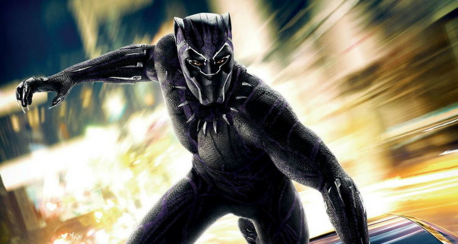

Chadwick Boseman sebagai T'Challa, Black Panter adalah salah satu tokoh pahlawan yang ada di komik Marvel. Karakter ini diciptakan oleh Stan Lee dan Jack Kirby. Tokoh Black Panther pertama kali muncul pada komik Fantastic Four Vol 52 yang terbit pada bulan Juli 1966. Black Panther adalah superhero kulit hitam pertama yang pernah dibuat di Amerika yang kemudian disusul dengan kemunculan Falcon.
T'Challa atau Black Panther merupakan putra dari raja T'Chaka, pemimpin suku Wakanda. Wakanda merupakan salah satu suku yang berasal dari Afrika. Black Panther sendiri merupakan sebuah julukan dari warga Wakanda untuk menjuluki pahlawan mereka. Awalnya, Raja T'Chaka merupakan sosok Black Panther, dirinya melindungi warga Wakanda dari tindak kejahatan. Suku Wakanda memang menutup diri dari dunia luar. Hal tersebut dilakukan karena Wakanda kaya akan Vibranium (bahan pembuat tameng Captain America) dan HYDRA mencari bahan tersebut.
Saat T'Chaka meninggal dunia, T'Challa akhirnya menjadi raja Wakanda dan meneruskan peran sang ayah sebagai Black Panther. Selama dirinya menjadi Black Phanter, banyak sekali musuh seperti Red Skull dan Chintauri yang ingin menyerang wakanda untuk merebut vibranium mereka. Beruntung saat itu SHIELD membantu mereka dan akhirnya Black Panther bergabung dengan organisasi yang dipimpin Nick Fury tersebut.
Sebagai Black Panther, T'Challa memiliki darah keluarga Wakandan Panther. Ikatan darah tersebut membuat dirinya berbeda dengan warga Wakanda lainnya. Black Panther memiliki stamina, kekuatan, kecepatan, dan reflek yang gesit layaknya seekor panther. Sebagai raja Wakanda, T'Challa juga memiliki akses menuju markas rahasia Wakanda yang ternyata penuh dengan peralat super canggih. Kostum dan cakar dari Black Panther berasal dari vibranium sehingga ia bisa kebal peluru dan cakarnya mampu memotong apapun. Selain kekuatan fisik, Black Panther juga merupakan orang yang terpelajar. Dirinya mendapatkan gelar Ph.D dari Oxford University.